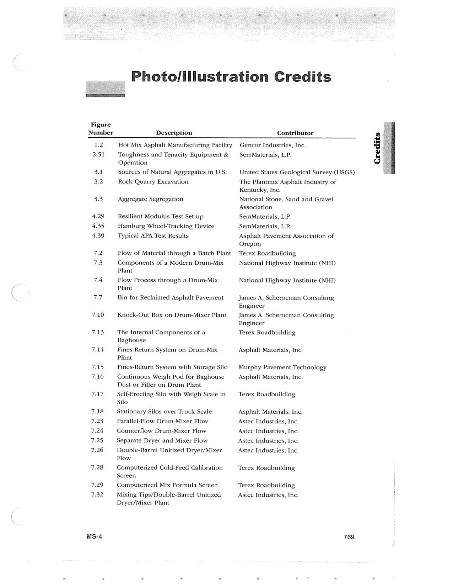

PDF page 803 · book page sequence 769


Searchable transcription
Unproofread OCR · 253 detected words; mean OCR confidence 93.46. Check technical values, symbols and table columns against the scan.
Photo/illustration Credits
Figure Number Description Contributor 1.2 Hot Mix Asphalt Manufacturing Facility Gencor Industries, Inc. 2.51 Toughness and Tenacity Equipment & | SemMaterials, L.P. Operation 3.1 Sources of Natural Aggregates in U.S. United States Geological Survey (USGS) 3.2 Rock Quarry Excavation The Plantmix Asphalt Industry of Kentucky, Inc. 3.3 Aggregate Segregation National Stone, Sand and Gravel Association 4.29 Resilient Modulus Test Set-up SemMaterials, L.P. 4.35 Hamburg Wheel-Tracking Device SemMaterials, L.P. 4.39 Typical APA Test Results Asphalt Pavement Association of Oregon 7.2 Flow of Material through a Batch Plant Terex Roadbuilding 73 Components of a Modern Drum-Mix National Highway Institute (NHI) Plant 7.4 Flow Process through a Drum-Mix National Highway Institute (NHD Plant 7.7 Bin for Reclaimed Asphalt Pavement James A. Scherocman Consulting Engineer 7.10 Knock-Out Box on Drum-Mixer Plant — James A. Scherocman Consulting Engineer 7.13 The Internal Components of a Terex Roadbuilding Baghouse 7.14 Fines-Return System on Drum-Mix Asphalt Materials, Inc. Plant 7.15 Fines-Return System with Storage Silo | Murphy Pavement Technology 7.16 Continuous Weigh Pod for Baghouse Asphalt Materials, Inc. Dust or Filler on Drum Plant 7.17 Self-Erecting Silo with Weigh Scale in Terex Roadbuilding Silo 7.18 Stationary Silos over Truck Scale Asphalt Materials, Inc. 7.23 Parallel-Flow Drum-Mixer Flow Astec Industries, Inc. 7.24 Counterflow Drum-Mixer Flow Astec Industries, Inc. 7.25 Separate Dryer and Mixer Flow Astec Industries, Inc. 7.26 Double-Barrel Unitized Dryer/Mixer Astec Industries, Inc. Flow 7.28 Computerized Cold-Feed Calibration Terex Roadbuilding Screen 7.29 Computerized Mix Formula Screen Terex Roadbuilding 7.32 Mixing Tips/Double-Barrel Unitized Astec Industries, Inc. Dryer/Mixer Plant MS-4 769